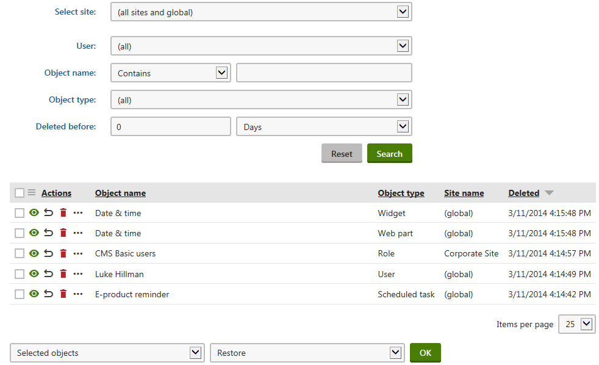

Objects recycle bin
You can configure the system to remove deleted objects to a recycle bin instead of deleting them permanently:
Open the Settings application.
Select the Versioning & synchronization -> Object versioning category.
Set Delete objects to recycle bin to either Versioned objects only, or All objects.
Click Save.
Deleted objects that match the setting are now moved to the recycle bin.
Using the recycle bin for large media files
Storing very large media files in the recycle bin consumes a significant amount of memory and space in the database. If your system contains such files, we recommend disabling the recycle bin for media files:
Open the Object versioning settings category.
Select the Versioned objects only option for the Delete objects to recycle bin setting.
Ensure that the Media files option is disabled in the Use object versioning for section of the settings.
Click Save.
Managing objects in the recycle bin
To access deleted objects, open the Recycle bin application and select the Objects tab.
Standard users of the Kentico administration interface can only work with objects that they deleted
Users with the Global administrator privilege level can manage objects removed by any user
The following actions are available for each deleted object:
 View - opens a new window with the data of the deleted object.
View - opens a new window with the data of the deleted object.Restore - moves the object from the recycle bin back into the system (in the corresponding application).
 Delete - permanently removes the object (cannot be restored).
Delete - permanently removes the object (cannot be restored).
Click Other actions (...) to access additional options. The options depend on the type of the object:
Global objects without site bindings:
Restore without site bindings - performs the standard restore action.
Restore to current site - performs the standard restore action.
Global objects with site bindings:
Restore without site bindings - restores the object, but does not assign it to any website.
Restore to current site - restores the object and assigns it to the current website (the one that is using the domain in the current URL).
Site objects (objects whose definition contains the SiteID column):
Restore without site bindings - performs the standard restore action.
Restore to current site - restores the object and assigns it to the current website (the one that is using the domain in the current URL).
To perform operations for multiple deleted objects, use the selection boxes and selectors below the list.

Viewing the object recycle bin as a global administrator